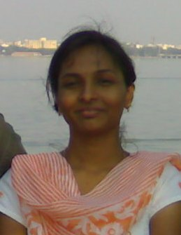

The Yearbook - Commemorating 2005-09!
Spandana's profile information
Name - SpandanaBirthday - 7th May
Email - spandana@students.iiit.ac.in
Address - Nelakondapally , Khammam
Phone - 9963657215
Testimonials written to Spandana
Spandana's Album

{kind=link}
Default caption
Testimonials
For DeeptiDeeps (the new Pirate of the Parijaat
 ).. the very first impression will be studious , sincere , kasi types and all .. I was pretty close to her in the first two semesters (remember how we used to read physics in the lib ? going for movies after the mid sem exams ? )later .. again in the 6th semester we again became close friends . I donno y but I had the feeling that we somehow always share a special bond ( Hmm .. not covalent bond but something more spl than that
).. the very first impression will be studious , sincere , kasi types and all .. I was pretty close to her in the first two semesters (remember how we used to read physics in the lib ? going for movies after the mid sem exams ? )later .. again in the 6th semester we again became close friends . I donno y but I had the feeling that we somehow always share a special bond ( Hmm .. not covalent bond but something more spl than that  ).
).
Deeps the very first thing both of us should regret is that randaka
 . Why the hell did we do that ? Still I keep on asking myslef y .. y .. y ? .
. Why the hell did we do that ? Still I keep on asking myslef y .. y .. y ? .
Hmm .. one of the secret admirer of my jokes ( love u da
) . Its always been lot of fun hanging out wid u guys in yuktahar all the memorable lunches , dinners, and breakfast sessions . All the nite out talks , sam meetings , sunday activities .. sharing all "the" topics and advices .. playing the cupid roles , concept of 7G's ... waah we rock ya .
Well .. she is very very hardworking , dedicated and has got great determination . I always wanted to start something like samvedana but never worked for me .. I learnt a lot from your decidation and the effort u have put on samvedana . Seriously I admire you for that .
Well coming to the great part the rock star of GH
 . Very suppportive , very helping , very cool .
. Very suppportive , very helping , very cool .
Rare combo of beauty , brains ,sensitivity , coolness and all great great things
.
Deeps All the very best for your future .
Will miss all the fun we had
. Stay in touch love you  .
.
For Anupama Gali
Anu(andu , anda , anups .. lot more ) .. Well known her since 5 years ..one of the cutest and sweetest girls(she is a real kid ) I have ever met . A great great poet(loved all your poems ) , great singer and a movie songs database
.
Very very sensitive oh my god don't u dare teasing her .. she is very adorable and anyone will easily like her . Very hardworking and always has a helping hand for the needy
.
Well a great admirer for my humorous (
) jokes . I loved ur support anu . We both rock ya .
U are one of the wonderful and rare personalities I have ever met . Will def miss you
and all the fun we had .
All the best for your future . Hope you complete your MS soon .. get into civils and achieve all the heights
.
Loads of love
. Miss you
For Lydia Manikonda
I take the honor of writing a testimonial for my best buddy .
Well knowing her for a long period of 7 years makes me confused .. how to start off a testimonial and end it in compact . I can write a big book on her that describes how close we are an how much she means to me .
Her name .. swirls in most of the mouths .. as 'Very Hard working girl ' .. and thats how I came to know her in the beginning .. later we became clasmates , benchmates , roommates !! . Hmm .. well it was tough in the beginning .. I remember all the cold wars and silly fights we had about the weekend test ranks
 . I loved your competitive spirit ya ! . I never thought that we would end up at a same place for Btech .
. I loved your competitive spirit ya ! . I never thought that we would end up at a same place for Btech .
I could see lot of change in lydu after coming to IIIT .. the most caring , loving , funny , sweet , emotional (all senti and sweet kinda adjectives may not be sufficnet here to describe her as she is that adorable love u
).
She's the one who first comes into my mind whenever I want to share any happy or a sad thing . A rare combo of great things ! .
Easily gets angry on simple things and sometimes she's follishly stubborn on stupid things . (I was victim mant times in this case
).
Love you lyddu .. Im def gonna miss you spending wonderful time wid you .
All the best for your future and loads of love
.
For sushma nadella
Sushma .. but we all call her in many more diff ways , best of dem wud be susu
. Well to start off my wingie in the first year but hardly use to talk to me then .. Hmm as years passed by we became close and closer .. and now she is one of my good friends . She's very hardworking , sincere and very caring .
Well we have shared a great time together .. all the horror movies .. wahh wonderful gossip
and awesome poses for the pics , absolutely memorable yuktahar lunches and dinners .dumbc session we had .. inka mana rhyming counters , all the voice recording sessions (those were really awesome ), great conversations abt 'mana vallu' inka chala chala will def miss all this fun
Shez got gr8 attitude and a perfect balance of all the ingredients ..
All in all u are the best in your own ways love u ra
All the best for your future ..
Will miss u a lot
love u da
P.S : hey sus btw u remember our deal kada ? Kani ippudu antha avasaram ledu anipistundi neways we donno kada em avutundo future lo !!
For Tavva Rajesh
Tavva ..Tavs .. one of my best friends in IIIT . Well 3rd sem daka asalu teledu .. he was my ITWS proj partner papam mottam vade chesadu
. Very very talented .. versatile genius and a very sweet person .. chala caring . Eppudu naku counter veyadaniki ready ga vuntadu  . Chala chaala hard working .. ,chala dedicated ..great dancer (na salsa partner we had lot of fun ) . I will never forget how we played hide and seek in ontology lab loll bhayapettesam kada andarini cupboard lo dakkoni . On the whole a great great guy and one of the rare personalities .. konchem style kodatadu kani chala manchodu .
. Chala chaala hard working .. ,chala dedicated ..great dancer (na salsa partner we had lot of fun ) . I will never forget how we played hide and seek in ontology lab loll bhayapettesam kada andarini cupboard lo dakkoni . On the whole a great great guy and one of the rare personalities .. konchem style kodatadu kani chala manchodu .
All the very best for your ms and phd , postdoc
I'm def gonna miss you
.. stay in touch
For Namrata Suri
Finally .. writing a testimonial for one of my best buddies ..
Well .. namrata .. nammu !! how to start ... hummmmmm
Nammu is my best pal since a pretty long time ..
Very very talented .. smart , superbly cute , very caring , loving and very sensitive . Shez the one with whom u can share anything and evrything and she will be always there for you .
Hmm .. very patient listener and the first victim of all my humourous and funny jokes
.
Well we have shared a great wonderful time together ..
How can I ever forget that long walks , nite out talks (Gossip), all the horror movies we watched together , selecting novels in the library
 , ramp walk for the fashion ka mar jaawa , felicity dj and many more ... they are absolutely memorable .
, ramp walk for the fashion ka mar jaawa , felicity dj and many more ... they are absolutely memorable .
One of the wonderful persons I have ever met .....
Wishing you all the very best for your future
.